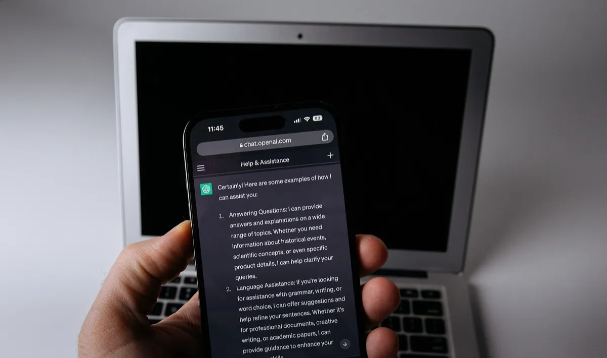

Cómo aparecer en ChatGPT y en las búsquedas con IA si tienes un negocio local
El 45% de los consumidores ya usa IA para buscar negocios locales. Cómo eligen ChatGPT y Gemini qué recomendar y un plan de 30 días para aparecer.

En resumen
- El uso de ChatGPT y otras IA para pedir recomendaciones locales pasó de 6% a 45% en un año (BrightLocal 2026).
- Los asistentes resumen lo que ya existe sobre tu negocio: perfiles, reseñas, redes y tu sitio web.
- Las reseñas reales y detalladas son la materia prima con la que la IA te describe.
- La información consistente en Google, Apple Maps y redes facilita que te recomienden.
Contenido del artículo
- Cómo eligen los asistentes de IA qué negocios recomendar
- Las reseñas son la materia prima de la IA
- Estar en todas las plataformas que importan
- Tu sitio web: escribe para personas (y para máquinas)
- Menciones fuera de tu negocio
- Cómo saber si apareces
- Plan de 30 días
- Conclusión
- Preguntas frecuentes
- Fuentes y referencias
«¿Cuál es la mejor taquería cerca de la Condesa?» «Recomiéndame un dentista en Zapopan que atienda sábados.» Cada vez más personas hacen estas preguntas a ChatGPT, Gemini u otros asistentes de inteligencia artificial en lugar de escribirlas en Google. Según la encuesta 2026 de BrightLocal, el uso de ChatGPT y otras herramientas de IA para buscar recomendaciones locales pasó de 6% a 45% en un año, y ya es la tercera fuente más popular. En esta guía te explicamos cómo «piensan» estos asistentes y qué puedes hacer para que tu negocio aparezca en sus respuestas.
Cómo eligen los asistentes de IA qué negocios recomendar
Ningún asistente publica una fórmula exacta, pero el principio general es el mismo: resumen lo que ya existe en internet sobre tu negocio. Cuando alguien pide una recomendación local, el asistente suele consultar fuentes como mapas, directorios, sitios de reseñas, redes sociales y páginas web, y arma una respuesta con los negocios que aparecen de forma más consistente, con mejores opiniones y con información más clara.
Eso tiene una consecuencia práctica: no existe un «SEO para ChatGPT» separado del buen SEO local. Lo que te ayuda a aparecer en Google Maps (un perfil completo, reseñas reales y frecuentes, información consistente) es la base de lo que la IA puede encontrar y resumir sobre ti.
Las reseñas son la materia prima de la IA
La misma encuesta de BrightLocal encontró que el 82% de los consumidores lee resúmenes de reseñas generados por IA, el 40% confía en las plataformas de IA para recomendaciones de negocios y el 42% confía en ellas tanto como en las reseñas tradicionales.
Piensa en lo que eso implica: cuando un asistente describe tu negocio como «famoso por su atención rápida y sus tacos de suadero», está resumiendo lo que escribieron tus clientes. Por eso importan tres cosas:
- Cantidad: más reseñas dan más material para que la IA te describa.
- Recencia: opiniones recientes reflejan cómo eres hoy.
- Detalle: una reseña que menciona qué compró el cliente y por qué le gustó es mucho más útil que «muy bien».
Puedes invitar a tus clientes a contar su experiencia, pero nunca les pidas que incluyan palabras específicas ni les ofrezcas nada a cambio: Google lo prohíbe. Lee qué considera Google como participación falsa.
Estar en todas las plataformas que importan
La IA cruza fuentes. Si tu negocio aparece con el mismo nombre, dirección, teléfono y horario en todas partes, es más fácil que te «entienda» y te recomiende con confianza. Revisa estas plataformas:
| Plataforma | Qué revisar |
|---|---|
| Google (Perfil de Empresa) | Categoría correcta, horario, fotos, descripción, reseñas respondidas |
| Apple Maps | Reclama tu ubicación en Apple Business y controla logo, horarios e imágenes. Su uso para leer reseñas casi se duplicó (de 14% a 27%) en 2026. |
| Facebook e Instagram | Mismo nombre, dirección y horario que en Google; publicaciones recientes |
| TripAdvisor, Airbnb, apps de delivery | Si aplican a tu giro, mantenlas al día y responde opiniones |
| Tu sitio web | Una página clara con qué haces, dónde estás, horarios y precios |
Tu sitio web: escribe para personas (y para máquinas)
Si tienes página web, es la fuente que tú controlas al 100%. Algunas prácticas que ayudan tanto a Google como a los asistentes de IA:
- Di claramente qué haces y dónde: «Taquería de suadero y pastor en la colonia Condesa, CDMX», no solo «Los mejores tacos».
- Responde preguntas reales en una sección de preguntas frecuentes: horarios, estacionamiento, formas de pago, si aceptas reservaciones.
- Usa datos estructurados (schema.org) de negocio local con tu nombre, dirección, teléfono y horario.
- Mantén todo consistente con tu Perfil de Empresa.
- Que cargue rápido en celular: es donde te van a ver.
Menciones fuera de tu negocio
Los asistentes también aprenden de lo que otros dicen de ti: notas en medios locales, blogs de comida o viajes, guías de la ciudad, foros y redes. No puedes controlarlo, pero sí provocarlo:
- Participa en eventos y ferias de tu colonia o ciudad.
- Colabora con creadores de contenido locales (siempre transparentando las colaboraciones pagadas).
- Pide a tus proveedores o aliados que te mencionen en sus páginas.
Cómo saber si apareces
Haz la prueba tú mismo: pregúntale a ChatGPT, Gemini u otro asistente lo que preguntaría un cliente («mejor estética en [tu colonia]», «dónde desayunar en [tu ciudad] con terraza») y anota:
- ¿Aparece tu negocio?
- ¿La información es correcta (horario, dirección, lo que vendes)?
- ¿Cómo te describe? ¿Coincide con lo que dicen tus reseñas?
- ¿Qué negocios aparecen en tu lugar y qué tienen que tú no?
Repite la prueba cada mes. Si la información está mal, corrígela primero en tu Perfil de Empresa, tu sitio web y tus redes: son las fuentes de donde la IA la toma.
Plan de 30 días
- Semana 1: completa y verifica tu Perfil de Empresa de Google; reclama tu ubicación en Apple Maps.
- Semana 2: unifica nombre, dirección, teléfono y horario en todas tus redes y directorios.
- Semana 3: coloca una tarjeta de reseñas en tu mostrador e invita a todos tus clientes a contar su experiencia.
- Semana 4: responde todas tus reseñas, publica en redes y haz tu primera prueba en ChatGPT y Gemini.
Conclusión
La búsqueda con IA no reemplaza al SEO local: lo amplifica. Los negocios con perfiles completos, información consistente y un flujo constante de reseñas reales son los que los asistentes encuentran, entienden y recomiendan. Empieza por lo básico con nuestra guía para aparecer en los primeros lugares de Google Maps y revisa los datos de reseñas 2026.
Preguntas frecuentes
¿Se puede pagar para aparecer en ChatGPT?
No existe una forma de pagar para aparecer en las respuestas orgánicas de los asistentes de IA. Lo que funciona es tener información completa y consistente y buenas reseñas en las plataformas que consultan.
¿Las reseñas de Google influyen en lo que dice la IA?
Las reseñas son una de las fuentes públicas más ricas sobre un negocio. El 82% de los consumidores lee resúmenes de reseñas generados por IA, según BrightLocal 2026.
¿Necesito un sitio web para aparecer en la IA?
No es indispensable, pero ayuda: es la única fuente que controlas al 100%. Como mínimo, mantén completo tu Perfil de Empresa de Google y tus redes.
¿Qué es Apple Business?
Es el portal de Apple para empresas, donde puedes reclamar tu ubicación en Apple Maps y controlar tu logo, horarios e imágenes.
Fuentes y referencias
- Local Consumer Review Survey 2026 — BrightLocal
- Cómo mejorar tu posicionamiento local en Google — Ayuda de Perfil de Empresa de Google
- Apple Business: reclama tu ubicación en Apple Maps — Apple
- Contenido prohibido y restringido — Políticas de contenido aportado por usuarios de Google Maps
Las marcas mencionadas pertenecen a sus respectivos dueños. Las imágenes provienen de Wikimedia Commons y se usan según su licencia libre, indicada en cada pie de foto.

Diseñamos y programamos tarjetas NFC con código QR para negocios de todo México. Escribimos estas guías con base en la documentación oficial de Google, Apple y Android y en lo que aprendemos todos los días con nuestros clientes.
Contáctanos · Cómo funcionan nuestras tarjetas